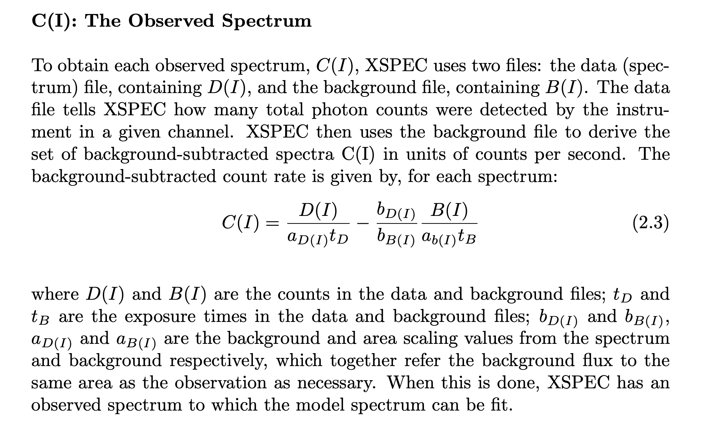

Spectral fitting with PyXSPEC#
# Import necessary packages
import numpy as np
import os
#import bxa.xspec as bxa
from IPython.display import display, HTML, Image
import xspec
%load_ext wurlitzer
import IPython.display
os.environ['HEADASNOQUERY'] = ''
os.environ['HEADASPROMPT'] = '/dev/null'
Load data into XSPEC#
xspec.AllData("1:1 fpma_grp50.pha")
New filename ( "none" or "/*" to return to the XSPEC prompt): No such file: .pha
New filename ( "none" or "/*" to return to the XSPEC prompt): No such file: .pha
New filename ( "none" or "/*" to return to the XSPEC prompt):
Error: cannot read spectrum file fpma_grp50.pha
terminated at user request
Pay attention to the output after loading the data and understand each line. What are particularly important: (1) the exposure time; (2) the background file; (3) the RMF and ARF files.
The source and background spectral files are required to calculate the background-subtracted spectra \(C(I)\), in units of counts per second. \(C(I)\) represents the count rate from the source in a given instrument channel. See the quote from the XSPEC manual below.
The response files are required to calculate the predicted count rate for each channel for a given model.
\(M(I) = \int M(E) R(I,E) A(E) dE\), where M(E) is the spectral model, \(R(I,E)\) is the redistribution matrix (RMF) and \(A(E)\) is the effective area (ARF). Finding the best-fit is basically minimizing the difference between \(C(I)\) and \(M(I)\).
# Ignore uneffective energy ranges
# The exact energy range to use depends on the intrument and
# also the data. For example, for NuSTAR, the effective energy
# range is 3.0-79.0 keV. However, depending on the data, the
# background may dominate over the signal above a certain
# energy.
xspec.AllData.ignore("1: **-3.0 79.0-**")
***XSPEC Error: no data loaded
No such file: .pha
---------------------------------------------------------------------------
Exception Traceback (most recent call last)
Cell In[4], line 8
1 # Ignore uneffective energy ranges
2 # The exact energy range to use depends on the intrument and
3 # also the data. For example, for NuSTAR, the effective energy
4 # range is 3.0-79.0 keV. However, depending on the data, the
5 # background may dominate over the signal above a certain
6 # energy.
----> 8 xspec.AllData.ignore("1: **-3.0 79.0-**")
File ~/heasoft/heasoft-6.35.2/aarch64-apple-darwin24.6.0/lib/python/xspec/data.py:579, in DataManager.ignore(self, ignoreRange)
577 ignoreArgs += ["**:"]
578 ignoreArgs += ignoreRange.split()
--> 579 _pyXspec.doXspecCmd(ignoreArgs)
580 else:
581 raise Exception("Error: Argument to ignore function must be a string.")
Exception: Error executing command: ignore
When ignoring energy bands, make sure to use float numbers (e.g., 3.0) instead of int (e.g., 3). Int numbers are interpreted as channel numbers, instead of energies, by XSPEC.
Load model#
model = xspec.Model("tbabs*nthcomp")
========================================================================
Model TBabs<1>*nthComp<2> Source No.: 1 Active/On
Model Model Component Parameter Unit Value
par comp
1 1 TBabs nH 10^22 1.00000 +/- 0.0
2 2 nthComp Gamma 1.70000 +/- 0.0
3 2 nthComp kT_e keV 100.000 +/- 0.0
4 2 nthComp kT_bb keV 0.100000 frozen
5 2 nthComp inp_type 0/1 0.0 frozen
6 2 nthComp Redshift 0.0 frozen
7 2 nthComp norm 1.00000 +/- 0.0
________________________________________________________________________
tbvabs Version 2.3
Cosmic absorption with grains and H2, modified from
Wilms, Allen, & McCray, 2000, ApJ 542, 914-924
Questions: Joern Wilms
joern.wilms@sternwarte.uni-erlangen.de
joern.wilms@fau.de
http://pulsar.sternwarte.uni-erlangen.de/wilms/research/tbabs/
PLEASE NOTICE:
To get the model described by the above paper
you will also have to set the abundances:
abund wilm
Note that this routine ignores the current cross section setting
as it always HAS to use the Verner cross sections as a baseline.
Fit statistic : Chi-Squared 3.986916e+06 using 541 bins.
Test statistic : Chi-Squared 3.986916e+06 using 541 bins.
Null hypothesis probability of 0.000000e+00 with 537 degrees of freedom
Current data and model not fit yet.
# Reset parameters
model.TBabs.nH.values = (0.6, 0.01, 0.1, 0.1, 2.0, 2.0)
model.nthComp.Gamma.values = (2.0, 0.01, 1.2, 1.2, 3.0, 3.0)
model.nthComp.kT_e.values = (60.0, 0.1, 10, 10, 300, 300)
model.nthComp.kT_bb.values = (0.1, -0.1)
model.nthComp.Redshift.values = (0.0, -0.1)
model.nthComp.inp_type.values = (0, -0.1)
model.nthComp.norm.values = (1.0, 0.01, 1e-5, 1e-5, 1e5, 1e5)
Fit statistic : Chi-Squared 3.969241e+06 using 541 bins.
Test statistic : Chi-Squared 3.969241e+06 using 541 bins.
Null hypothesis probability of 0.000000e+00 with 537 degrees of freedom
Current data and model not fit yet.
Fit statistic : Chi-Squared 1.505075e+06 using 541 bins.
Test statistic : Chi-Squared 1.505075e+06 using 541 bins.
Null hypothesis probability of 0.000000e+00 with 537 degrees of freedom
Current data and model not fit yet.
Fit statistic : Chi-Squared 1.495996e+06 using 541 bins.
Test statistic : Chi-Squared 1.495996e+06 using 541 bins.
Null hypothesis probability of 0.000000e+00 with 537 degrees of freedom
Current data and model not fit yet.
Fit statistic : Chi-Squared 1.495996e+06 using 541 bins.
Test statistic : Chi-Squared 1.495996e+06 using 541 bins.
Null hypothesis probability of 0.000000e+00 with 537 degrees of freedom
Current data and model not fit yet.
Fit statistic : Chi-Squared 1.495996e+06 using 541 bins.
Test statistic : Chi-Squared 1.495996e+06 using 541 bins.
Null hypothesis probability of 0.000000e+00 with 537 degrees of freedom
Current data and model not fit yet.
Fit statistic : Chi-Squared 1.495996e+06 using 541 bins.
Test statistic : Chi-Squared 1.495996e+06 using 541 bins.
Null hypothesis probability of 0.000000e+00 with 537 degrees of freedom
Current data and model not fit yet.
Fit statistic : Chi-Squared 1.495996e+06 using 541 bins.
Test statistic : Chi-Squared 1.495996e+06 using 541 bins.
Null hypothesis probability of 0.000000e+00 with 537 degrees of freedom
Current data and model not fit yet.
# perform a fit
xspec.Fit.statMethod = 'chi'
xspec.Fit.query = 'yes'
xspec.Fit.statTest = 'chi'
xspec.Fit.renorm()
xspec.Fit.perform()
Default fit statistic is set to: Chi-Squared
This will apply to all current and newly loaded spectra.
Fit statistic : Chi-Squared 1.495996e+06 using 541 bins.
Test statistic : Chi-Squared 1.495996e+06 using 541 bins.
Null hypothesis probability of 0.000000e+00 with 537 degrees of freedom
Current data and model not fit yet.
Test statistic is set to: Chi-Squared
Fit statistic : Chi-Squared 1.495996e+06 using 541 bins.
Test statistic : Chi-Squared 1.495996e+06 using 541 bins.
Null hypothesis probability of 0.000000e+00 with 537 degrees of freedom
Current data and model not fit yet.
Fit statistic : Chi-Squared 1.412720e+06 using 541 bins.
Test statistic : Chi-Squared 1.412720e+06 using 541 bins.
Null hypothesis probability of 0.000000e+00 with 537 degrees of freedom
Current data and model not fit yet.
Parameters
Chi-Squared |beta|/N Lvl 1:nH 2:Gamma 3:kT_e 7:norm
570676 289670 -3 0.973020 2.74758 191.055 6.79607
240244 230461 -3 1.57327 2.99467 78.6918 22.0427
145629 176760 0 1.82804 2.99776 25.8726 21.4214
114166 79167.2 0 1.94154 2.99966 17.1222 21.1789
99875.6 37020.9 0 1.99580 2.99462 11.6281 21.1314
98618.4 14800.8 0 1.99963 2.99529 11.3913 21.0761
97880.4 9748.1 0 1.99990 2.99552 11.2030 21.0301
97363.1 6462.31 0 1.99997 2.99542 11.0490 20.9906
96970.1 4270.85 0 1.99999 2.99509 10.9193 20.9558
96649.2 2931.89 0 2.00000 2.99458 10.8073 20.9245
96373.6 2345.54 0 2.00000 2.99395 10.7089 20.8958
96125.6 2338.13 0 2.00000 2.99323 10.6208 20.8690
95896.1 2613.64 0 2.00000 2.99247 10.5409 20.8435
95678.7 2964.77 0 2.00000 2.99166 10.4667 20.8192
95469.6 3313.63 0 2.00000 2.99083 10.3974 20.7956
95269.9 3637.44 0 2.00000 2.98999 10.3327 20.7726
95073.9 3929.89 0 2.00000 2.98915 10.2715 20.7502
94883.3 4198.33 0 2.00000 2.98830 10.2131 20.7282
94696.4 4448.02 0 2.00000 2.98745 10.1577 20.7065
94513.1 4673.91 0 2.00000 2.98661 10.1047 20.6850
94332.5 4887.66 0 2.00000 2.98578 10.0533 20.6639
94169.2 5094.57 0 2.00000 2.98495 10.0208 20.6429
94017.2 5111.43 0 2.00000 2.98413 10.0001 20.6219
93883.6 5015.51 0 2.00000 2.98335 10.0000 20.6007
93751.2 4726.21 0 2.00000 2.98260 10.0000 20.5791
93619 4498.67 0 2.00000 2.98188 10.0000 20.5572
93488.2 4321.44 0 2.00000 2.98118 10.0000 20.5351
93357.3 4185.34 0 2.00000 2.98051 10.0000 20.5128
93228.4 4081.35 0 2.00000 2.97985 10.0000 20.4906
93100.1 4001.64 0 2.00000 2.97921 10.0000 20.4683
92972 3945.24 0 2.00000 2.97859 10.0000 20.4461
92846.2 3906.14 0 2.00000 2.97797 10.0000 20.4239
91519 4368.87 0 2.00000 2.97152 10.0000 20.1854
85875.3 4358.25 -1 2.00000 2.90704 10.0000 18.4573
83739.8 50136.3 0 2.00000 2.90612 10.0000 18.2317
82861.4 32331.6 0 2.00000 2.90364 10.0000 18.0722
82376.9 25777.9 0 2.00000 2.90055 10.0000 17.9435
82049.8 23933.3 0 2.00000 2.89727 10.0000 17.8303
79847.3 36048.7 -1 2.00000 2.88533 10.0000 17.1118
78888.3 6445.23 -2 2.00000 2.85305 10.0000 16.0729
78884.4 2775.83 -3 2.00000 2.85316 10.0000 16.0954
78884.4 1.50241 0 2.00000 2.85316 10.0000 16.0954
78884.4 1033.65 4 2.00000 2.85316 10.0000 16.0954
==================================================
Variances and Principal Axes
1 2 3 7
1.0765E-07| -0.0100 -0.9994 0.0036 0.0315
4.5480E-04| 0.8145 -0.0258 0.0970 -0.5714
7.3994E-03| -0.5515 -0.0153 0.4351 -0.7116
9.3109E-02| 0.1798 0.0143 0.8951 0.4077
--------------------------------------------------
================================================
Covariance Matrix
1 2 3 4
5.564e-03 2.920e-04 1.325e-02 9.518e-03
2.920e-04 2.112e-05 1.139e-03 6.292e-04
1.325e-02 1.139e-03 7.601e-02 3.166e-02
9.518e-03 6.292e-04 3.166e-02 1.937e-02
------------------------------------------------
========================================================================
Model TBabs<1>*nthComp<2> Source No.: 1 Active/On
Model Model Component Parameter Unit Value
par comp
1 1 TBabs nH 10^22 2.00000 +/- 7.45897E-02
2 2 nthComp Gamma 2.85316 +/- 4.59553E-03
3 2 nthComp kT_e keV 10.0000 +/- 0.275700
4 2 nthComp kT_bb keV 0.100000 frozen
5 2 nthComp inp_type 0/1 0.0 frozen
6 2 nthComp Redshift 0.0 frozen
7 2 nthComp norm 16.0954 +/- 0.139169
________________________________________________________________________
Fit statistic : Chi-Squared 78884.40 using 541 bins.
Test statistic : Chi-Squared 78884.40 using 541 bins.
Null hypothesis probability of 0.00e+00 with 537 degrees of freedom
model.show()
========================================================================
Model TBabs<1>*nthComp<2> Source No.: 1 Active/On
Model Model Component Parameter Unit Value
par comp
1 1 TBabs nH 10^22 2.00000 +/- 7.45897E-02
2 2 nthComp Gamma 2.85316 +/- 4.59553E-03
3 2 nthComp kT_e keV 10.0000 +/- 0.275700
4 2 nthComp kT_bb keV 0.100000 frozen
5 2 nthComp inp_type 0/1 0.0 frozen
6 2 nthComp Redshift 0.0 frozen
7 2 nthComp norm 16.0954 +/- 0.139169
________________________________________________________________________
Chi-squared#
\(\chi^2 = \sum_{i=1}^{N} (C_i-M_i)^2/\sigma_i^2\), where \(C_i\) is the observed counts in channel \(i\), \(M_i\) is the model predicted counts and \(\sigma_i\) is the error of each bin.
# load the new model
model = xspec.Model("tbabs*(diskbb+comptt+gauss)")
========================================================================
Model TBabs<1>(diskbb<2> + compTT<3> + gaussian<4>) Source No.: 1 Active/On
Model Model Component Parameter Unit Value
par comp
1 1 TBabs nH 10^22 1.00000 +/- 0.0
2 2 diskbb Tin keV 1.00000 +/- 0.0
3 2 diskbb norm 1.00000 +/- 0.0
4 3 compTT Redshift 0.0 frozen
5 3 compTT T0 keV 0.100000 +/- 0.0
6 3 compTT kT keV 50.0000 +/- 0.0
7 3 compTT taup 1.00000 +/- 0.0
8 3 compTT approx 1.00000 frozen
9 3 compTT norm 1.00000 +/- 0.0
10 4 gaussian LineE keV 6.50000 +/- 0.0
11 4 gaussian Sigma keV 0.100000 +/- 0.0
12 4 gaussian norm 1.00000 +/- 0.0
________________________________________________________________________
Fit statistic : Chi-Squared 7.457094e+08 using 541 bins.
Test statistic : Chi-Squared 7.457094e+08 using 541 bins.
Null hypothesis probability of 0.000000e+00 with 531 degrees of freedom
Current data and model not fit yet.
# Reset parameters
model.setPars({7: "3.0 -0.1", 10: "6.4 0.01 6.0 6.0 7.0 7.0"})
Fit statistic : Chi-Squared 7.798480e+09 using 541 bins.
Test statistic : Chi-Squared 7.798480e+09 using 541 bins.
Null hypothesis probability of 0.000000e+00 with 532 degrees of freedom
Current data and model not fit yet.
xspec.Fit.renorm()
xspec.Fit.perform()
Fit statistic : Chi-Squared 2.470872e+06 using 541 bins.
Test statistic : Chi-Squared 2.470872e+06 using 541 bins.
Null hypothesis probability of 0.000000e+00 with 532 degrees of freedom
Current data and model not fit yet.
Parameters
Chi-Squared |beta|/N Lvl 1:nH 2:Tin 3:norm 5:T0 6:kT 9:norm 10:LineE 11:Sigma 12:norm
2.14499e+06 609987 3 0.949495 4.60292 0.101186 0.0999950 49.9987 0.00500887 6.40001 0.100023 0.00501482
2.13845e+06 1.30135e+06 2 0.745659 4.60691 0.101727 0.0998510 49.9758 0.00500743 6.40008 0.100253 0.00506891
2.10053e+06 1.29256e+06 1 0.254323 4.64537 0.106982 0.0983574 49.7416 0.00499247 6.40075 0.102808 0.00559479
1.85911e+06 1.29028e+06 0 0.00880542 4.91479 0.147670 0.0801503 47.0964 0.00480721 6.40355 0.144401 0.00981130
1.36941e+06 1.37717e+06 0 0.00211778 5.17529 0.243423 0.0289586 31.8117 0.00351507 6.38073 0.496886 0.0236766
1.28224e+06 455384 -1 0.000175361 4.74646 0.274586 0.00996071 23.1045 0.00164924 6.12856 1.25687 0.0551295
1.14964e+06 387043 -2 5.65468e-05 3.84966 0.493520 0.00995291 33.8850 0.000228248 6.00729 2.15115 0.111436
865352 738555 -3 2.09447e-05 2.90266 1.37112 0.142777 14.8443 0.00113859 6.00324 4.06032 0.258333
470044 374559 -2 1.47905e-09 3.00324 4.39449 0.101519 9.92924 0.000949334 6.00104 5.81385 0.145000
201792 115167 -3 3.28458e-10 2.64187 9.69879 2.09243 5.46685 0.0159226 6.88955 4.60698 0.0230183
112705 359147 -2 1.08617e-10 2.62117 10.3966 0.217245 7.05636 0.00106352 6.26476 17.2601 0.0106043
105342 83297.7 0 5.35090e-11 2.60529 10.3839 0.00998533 2.27224 0.000501996 6.70983 18.0022 0.00565527
104949 44295.6 5 2.62870e-11 2.60529 10.3839 0.0715602 6.21868 0.00838106 6.70982 18.0022 0.00565526
104948 45568.7 4 9.47775e-12 2.60529 10.3839 0.0715729 6.21874 0.00838279 6.70973 18.0022 0.00565519
104945 45568.7 3 4.22538e-12 2.60529 10.3839 0.0716992 6.21925 0.00840007 6.70883 18.0021 0.00565445
104916 45569.5 2 9.37337e-13 2.60529 10.3843 0.0729523 6.22423 0.00857150 6.69988 18.0011 0.00564700
104622 45577.1 1 4.33144e-13 2.60529 10.3881 0.0845471 6.25880 0.0101613 6.61372 17.9920 0.00557229
102326 45664.8 0 1.53625e-13 2.60456 10.4119 0.146649 5.92806 0.0188338 6.05748 17.9949 0.00484013
99341.8 44018.6 0 5.88804e-14 2.58907 10.4010 0.282304 3.34790 0.0399459 6.56107 18.8594 0.000863151
73252.8 16938.7 0 2.89884e-14 2.58894 10.4314 0.459256 4.21840 0.0866352 6.88365 19.2490 0.000659460
60178.2 31020.8 0 1.39035e-14 2.56796 10.2652 0.531736 3.87092 0.109101 6.99823 19.3482 0.000184509
22935 20530.8 -1 3.70831e-15 2.49576 9.84713 0.843539 3.48892 0.206176 6.99930 7.28243 7.52840e-05
6634.67 32136 -2 1.22673e-15 2.43919 9.87134 0.704835 3.39528 0.311536 6.99971 0.476632 2.28439e-05
4539.42 11168.7 -1 0.00695798 2.42182 9.59892 0.706077 3.49429 0.339352 6.22909 0.149458 0.00231351
2591.35 2340.78 -2 0.000950008 2.37831 8.25295 0.715703 4.05156 0.342445 6.38660 0.598740 0.00464590
2009.52 5875.8 -2 0.000134358 2.34041 7.69191 0.721218 4.12159 0.348972 6.32197 0.923115 0.0120449
1921.84 9721.58 -1 4.95088e-05 2.33493 7.65747 0.719254 4.12194 0.352329 6.28669 0.844366 0.0136072
1779.86 9208.05 -1 9.83256e-06 2.33132 7.63555 0.717658 4.12578 0.355597 6.29641 0.860717 0.0140157
1650.35 8594.06 -1 6.42984e-07 2.32853 7.61773 0.716057 4.12926 0.358554 6.29945 0.872207 0.0142791
1541.83 7973 -1 1.10121e-07 2.32635 7.60268 0.714444 4.13206 0.361217 6.30197 0.881090 0.0144874
1451.09 7409.92 -1 4.81774e-08 2.32466 7.58966 0.712838 4.13426 0.363625 6.30399 0.888495 0.0146692
1374.92 6901.22 -1 1.93030e-08 2.32337 7.57811 0.711249 4.13599 0.365811 6.30534 0.895054 0.0148372
1310.7 6441.89 -1 5.80972e-09 2.32242 7.56757 0.709683 4.13735 0.367805 6.30599 0.901106 0.0149978
1256.3 6027.44 -1 2.64899e-09 2.32174 7.55774 0.708145 4.13843 0.369631 6.30595 0.906835 0.0151546
1210 5653.06 -1 1.16452e-09 2.32129 7.54837 0.706638 4.13930 0.371311 6.30531 0.912344 0.0153095
1170.32 5314.85 -1 4.65601e-10 2.32103 7.53928 0.705163 4.14001 0.372862 6.30412 0.917694 0.0154635
1136.22 5007.7 -1 1.35749e-10 2.32093 7.53036 0.703722 4.14059 0.374301 6.30245 0.922920 0.0156173
1106.71 4729.93 -1 5.77428e-11 2.32097 7.52151 0.702315 4.14108 0.375641 6.30040 0.928045 0.0157712
1081.15 4477.42 -1 2.07429e-11 2.32112 7.51265 0.700945 4.14150 0.376893 6.29797 0.933058 0.0159251
1058.72 4249.03 -1 3.17140e-12 2.32137 7.50379 0.699606 4.14184 0.378071 6.29546 0.937927 0.0160783
1037.33 4038.91 -1 1.09971e-12 2.32167 7.49527 0.698298 4.14209 0.379226 6.29283 0.942828 0.0162217
1018.06 3824.89 -1 1.27854e-13 2.32208 7.48675 0.697038 4.14229 0.380291 6.28956 0.949023 0.0163817
1016.92 3607.79 -1 5.53759e-15 2.32255 7.47477 0.695712 4.14289 0.381165 6.29599 0.950851 0.0164175
861.327 3808.3 -2 2.36618e-15 2.32514 7.41230 0.684679 4.13716 0.393604 6.26857 0.984556 0.0175317
850.904 771.496 -2 0.0311973 2.33327 7.31747 0.673626 4.14026 0.400077 6.18496 1.04511 0.0201626
839.933 523.431 -1 0.00597771 2.33410 7.29916 0.672533 4.14138 0.400269 6.20128 1.04743 0.0198420
838.982 651.46 -1 0.00191210 2.33516 7.28483 0.671794 4.14235 0.400424 6.20270 1.04634 0.0198873
838.55 763.169 -1 0.000939590 2.33620 7.27192 0.671158 4.14286 0.400611 6.19931 1.04797 0.0200040
838.056 815.673 -1 0.000444651 2.33719 7.25961 0.670570 4.14307 0.400829 6.19487 1.05088 0.0201427
837.531 847.337 -1 0.000192646 2.33815 7.24762 0.670013 4.14311 0.401072 6.19028 1.05424 0.0202870
836.964 870.517 -1 6.46829e-05 2.33907 7.23581 0.669479 4.14305 0.401335 6.18578 1.05769 0.0204302
836.357 888.168 -1 3.23213e-05 2.33996 7.22411 0.668966 4.14292 0.401617 6.18147 1.06109 0.0205699
835.685 901.345 -1 1.60078e-05 2.34083 7.21251 0.668470 4.14275 0.401915 6.17735 1.06439 0.0207053
834.947 909.798 -1 7.81909e-06 2.34168 7.20097 0.667991 4.14253 0.402226 6.17343 1.06757 0.0208363
834.165 913.319 -1 3.72384e-06 2.34251 7.18948 0.667526 4.14229 0.402547 6.16970 1.07063 0.0209631
833.347 913.887 -1 1.68206e-06 2.34332 7.17802 0.667075 4.14202 0.402878 6.16613 1.07358 0.0210863
832.489 912.05 -1 6.66720e-07 2.34412 7.16661 0.666636 4.14173 0.403215 6.16271 1.07644 0.0212060
831.611 906.997 -1 1.62966e-07 2.34491 7.15523 0.666210 4.14142 0.403558 6.15942 1.07920 0.0213227
830.708 900.536 -1 3.82341e-08 2.34568 7.14387 0.665795 4.14110 0.403906 6.15625 1.08187 0.0214367
829.798 891.798 -1 7.40396e-09 2.34645 7.13255 0.665391 4.14076 0.404257 6.15319 1.08448 0.0215482
828.878 882.226 -1 3.59886e-09 2.34720 7.12124 0.664997 4.14041 0.404611 6.15022 1.08701 0.0216574
827.954 871.473 -1 1.72274e-09 2.34795 7.10997 0.664613 4.14005 0.404966 6.14735 1.08949 0.0217646
827.026 859.649 -1 7.98695e-10 2.34869 7.09871 0.664238 4.13968 0.405322 6.14455 1.09190 0.0218699
826.109 846.785 -1 3.44018e-10 2.34942 7.08748 0.663872 4.13930 0.405679 6.14183 1.09426 0.0219734
825.183 834.343 -1 1.20458e-10 2.35015 7.07628 0.663515 4.13891 0.406037 6.13917 1.09658 0.0220754
824.275 819.84 -1 1.06175e-11 2.35087 7.06509 0.663166 4.13852 0.406393 6.13657 1.09885 0.0221758
823.328 806.218 -1 3.90948e-12 2.35159 7.05397 0.662825 4.13811 0.406754 6.13397 1.10112 0.0222748
822.45 788.628 -1 6.08862e-13 2.35230 7.04282 0.662490 4.13770 0.407110 6.13164 1.10324 0.0223730
821.61 774.54 -1 2.00832e-13 2.35302 7.03165 0.662163 4.13730 0.407453 6.12914 1.10615 0.0224738
819.214 766.478 -2 7.11618e-14 2.36029 6.91749 0.659739 4.13372 0.409872 6.10695 1.12625 0.0233900
814.87 1037.34 0 1.26732e-14 2.36045 6.91910 0.659821 4.13393 0.410091 6.10422 1.12739 0.0234065
812.264 561.246 -1 4.41113e-15 2.36080 6.91112 0.659541 4.13245 0.410880 6.10300 1.12940 0.0234671
803.854 396.966 -2 1.38435e-15 2.36618 6.80957 0.656955 4.12606 0.415554 6.09299 1.14027 0.0240493
800.694 110.619 -2 4.53309e-17 2.37298 6.71212 0.654131 4.12179 0.418811 6.10578 1.13466 0.0242998
***Warning: Zero alpha-matrix diagonal element for parameter 1
Parameter 1 is pegged at 4.53309e-17 due to zero or negative pivot element, likely
caused by the fit being insensitive to the parameter.
794.393 447.829 -2 4.53309e-17 2.37923 6.61265 0.652848 4.11696 0.421212 6.06300 1.16588 0.0254484
790.176 106.805 -2 4.53309e-17 2.38555 6.51471 0.651457 4.11266 0.423495 6.04396 1.18285 0.0262909
786.293 80.5075 -2 4.53309e-17 2.39178 6.42065 0.650227 4.10816 0.425739 6.02584 1.19678 0.0270222
782.687 99.2758 -2 4.53309e-17 2.39789 6.33005 0.649150 4.10357 0.427897 6.00943 1.20929 0.0277063
779.16 117.177 -2 4.53309e-17 2.40388 6.24266 0.648202 4.09894 0.429969 6.00209 1.22088 0.0283592
776.344 53.5959 -2 4.53309e-17 2.40974 6.15822 0.647377 4.09433 0.431963 6.00048 1.23182 0.0289806
774.538 82.9742 -2 4.53309e-17 2.41546 6.07663 0.646666 4.08973 0.433883 6.00013 1.24220 0.0295720
773.646 205.17 -2 4.53309e-17 2.42107 5.99783 0.646053 4.08516 0.435727 6.00000 1.25206 0.0301377
773.577 326.709 -2 4.53309e-17 2.42656 5.92175 0.645521 4.08064 0.437501 6.00000 1.26144 0.0306806
772.555 445.233 -1 4.53309e-17 2.42701 5.91431 0.645565 4.08006 0.437770 6.00000 1.25911 0.0306173
771.865 415.619 -1 4.53309e-17 2.42748 5.90692 0.645614 4.07944 0.437999 6.00000 1.25787 0.0305867
771.364 394.481 -1 4.53309e-17 2.42796 5.89954 0.645665 4.07881 0.438200 6.00000 1.25725 0.0305760
770.975 381.051 -1 4.53309e-17 2.42845 5.89218 0.645718 4.07820 0.438382 6.00000 1.25698 0.0305775
770.655 373.009 -1 4.53309e-17 2.42895 5.88482 0.645770 4.07760 0.438550 6.00000 1.25694 0.0305866
770.378 368.913 -1 4.53309e-17 2.42945 5.87747 0.645823 4.07701 0.438710 6.00000 1.25703 0.0306006
770.128 366.393 -1 4.53309e-17 2.42995 5.87014 0.645875 4.07643 0.438864 6.00000 1.25722 0.0306177
769.898 365.033 -1 4.53309e-17 2.43045 5.86282 0.645927 4.07586 0.439015 6.00000 1.25746 0.0306370
769.68 365.363 -1 4.53309e-17 2.43095 5.85551 0.645979 4.07530 0.439162 6.00000 1.25775 0.0306576
769.47 366.031 -1 4.53309e-17 2.43145 5.84823 0.646031 4.07474 0.439308 6.00000 1.25806 0.0306792
769.268 366.652 -1 4.53309e-17 2.43195 5.84097 0.646082 4.07419 0.439452 6.00000 1.25839 0.0307015
769.071 367.773 -1 4.53309e-17 2.43245 5.83373 0.646133 4.07365 0.439595 6.00000 1.25873 0.0307242
768.877 369.537 -1 4.53309e-17 2.43294 5.82651 0.646184 4.07310 0.439738 6.00000 1.25907 0.0307472
768.686 371.046 -1 4.53309e-17 2.43344 5.81931 0.646234 4.07257 0.439879 6.00000 1.25943 0.0307704
768.499 372.425 -1 4.53309e-17 2.43393 5.81215 0.646284 4.07203 0.440020 6.00000 1.25979 0.0307937
768.312 374.189 -1 4.53309e-17 2.43443 5.80501 0.646334 4.07150 0.440161 6.00000 1.26015 0.0308172
768.13 375.33 -1 4.53309e-17 2.43492 5.79789 0.646383 4.07097 0.440302 6.00000 1.26051 0.0308407
767.948 377.74 -1 4.53309e-17 2.43541 5.79080 0.646432 4.07044 0.440441 6.00000 1.26087 0.0308643
767.77 378.964 -1 4.53309e-17 2.43590 5.78374 0.646480 4.06992 0.440581 6.00000 1.26124 0.0308879
762.115 435.615 -2 4.53309e-17 2.43950 5.71548 0.648830 4.06255 0.441992 6.00000 1.24329 0.0301770
757.164 40.6357 -3 4.53309e-17 2.47372 5.21565 0.654902 4.02309 0.450903 6.00000 1.26057 0.0312834
744.208 1622.4 -3 4.53309e-17 2.50356 4.87019 0.658226 3.99322 0.458239 6.00000 1.27585 0.0323084
737.635 988.57 -3 4.53309e-17 2.52754 4.61667 0.660678 3.96957 0.463924 6.00000 1.28775 0.0331270
734.092 602.285 -3 4.53309e-17 2.54674 4.42703 0.662580 3.95091 0.468318 6.00000 1.29709 0.0337681
732.084 370.2 -3 4.53309e-17 2.56209 4.28335 0.664071 3.93614 0.471736 6.00000 1.30445 0.0342713
730.907 228.278 -3 4.53309e-17 2.57434 4.17342 0.665244 3.92441 0.474407 6.00000 1.31027 0.0346674
730.201 142.407 -3 4.53309e-17 2.58411 4.08867 0.666169 3.91510 0.476503 6.00000 1.31487 0.0349797
729.769 89.3013 -3 4.53309e-17 2.59190 4.02293 0.666900 3.90770 0.478152 6.00000 1.31851 0.0352265
729.546 55.3715 -4 4.53309e-17 2.61174 3.85850 0.668725 3.88872 0.482326 6.00000 1.32683 0.0358300
729.077 352.15 -5 4.53309e-17 2.62050 3.79456 0.669515 3.88053 0.484065 6.00000 1.33112 0.0361028
729.062 60.1706 -6 4.53309e-17 2.62184 3.78447 0.669655 3.87933 0.484331 6.00000 1.33218 0.0361542
729.062 1.46536 -7 4.53309e-17 2.62207 3.78256 0.669682 3.87913 0.484378 6.00000 1.33241 0.0361642
***Warning: Zero alpha-matrix diagonal element for parameter 1
Parameter 1 is pegged at 4.53309e-17 due to zero or negative pivot element, likely
caused by the fit being insensitive to the parameter.
729.062 2.37937 1 4.53309e-17 2.62207 3.78256 0.669682 3.87913 0.484378 6.00000 1.33241 0.0361642
==========================================================================================
Variances and Principal Axes
2 3 5 6 9 10 11 12
5.7285E-08| 0.2038 0.0339 0.4912 0.1048 0.4413 0.0028 -0.0053 0.7144
4.3936E-07| 0.2045 0.0300 0.3854 0.1218 0.5630 -0.0084 0.0242 -0.6902
4.6964E-06| 0.7621 0.0566 0.1951 0.2731 -0.5447 0.0307 0.0479 -0.0576
2.7126E-05| 0.4365 0.0415 -0.7532 0.1778 0.4342 0.0835 0.0615 0.0972
2.0711E-04| 0.1601 0.1362 0.0444 -0.6244 0.0158 0.2086 0.7212 0.0036
4.0212E-04| -0.3198 -0.0921 0.0188 0.6805 -0.0449 0.1977 0.6201 0.0145
3.2606E-02| -0.0163 -0.1220 0.0490 -0.0408 -0.0081 0.9480 -0.2856 -0.0181
7.3398E-02| -0.1308 0.9753 -0.0065 0.1155 -0.0270 0.1030 -0.0839 -0.0058
------------------------------------------------------------------------------------------
================================================================================================
Covariance Matrix
1 2 3 4 5 6 7 8
1.318e-03 -9.278e-03 2.715e-05 -1.192e-03 2.730e-04 -1.508e-03 9.012e-04 6.479e-05
-9.278e-03 7.030e-02 -6.597e-04 8.388e-03 -1.898e-03 3.599e-03 -4.869e-03 -3.466e-04
2.715e-05 -6.597e-04 9.769e-05 -1.242e-04 -9.533e-06 1.468e-03 -4.066e-04 -2.812e-05
-1.192e-03 8.388e-03 -1.242e-04 1.302e-03 -2.310e-04 -3.611e-04 -2.540e-04 -2.160e-05
2.730e-04 -1.898e-03 -9.533e-06 -2.310e-04 6.316e-05 -4.561e-04 2.333e-04 1.723e-05
-1.508e-03 3.599e-03 1.468e-03 -3.611e-04 -4.561e-04 3.011e-02 -9.383e-03 -6.014e-04
9.012e-04 -4.869e-03 -4.066e-04 -2.540e-04 2.333e-04 -9.383e-03 3.439e-03 2.086e-04
6.479e-05 -3.466e-04 -2.812e-05 -2.160e-05 1.723e-05 -6.014e-04 2.086e-04 1.376e-05
------------------------------------------------------------------------------------------------
========================================================================
Model TBabs<1>(diskbb<2> + compTT<3> + gaussian<4>) Source No.: 1 Active/On
Model Model Component Parameter Unit Value
par comp
1 1 TBabs nH 10^22 4.53309E-17 +/- -1.00000
2 2 diskbb Tin keV 2.62207 +/- 3.63034E-02
3 2 diskbb norm 3.78256 +/- 0.265147
4 3 compTT Redshift 0.0 frozen
5 3 compTT T0 keV 0.669682 +/- 9.88375E-03
6 3 compTT kT keV 3.87913 +/- 3.60788E-02
7 3 compTT taup 3.00000 frozen
8 3 compTT approx 1.00000 frozen
9 3 compTT norm 0.484378 +/- 7.94745E-03
10 4 gaussian LineE keV 6.00000 +/- 0.173522
11 4 gaussian Sigma keV 1.33241 +/- 5.86400E-02
12 4 gaussian norm 3.61642E-02 +/- 3.70908E-03
________________________________________________________________________
Fit statistic : Chi-Squared 729.06 using 541 bins.
Test statistic : Chi-Squared 729.06 using 541 bins.
Null hypothesis probability of 2.61e-08 with 532 degrees of freedom
model.setPars({1: "0.12 -0.1"})
xspec.Fit.perform()
Fit statistic : Chi-Squared 819.66 using 541 bins.
Test statistic : Chi-Squared 819.66 using 541 bins.
Null hypothesis probability of 1.63e-14 with 533 degrees of freedom
Current data and model not fit yet.
Parameters
Chi-Squared |beta|/N Lvl 2:Tin 3:norm 5:T0 6:kT 9:norm 10:LineE 11:Sigma 12:norm
715.58 2001.21 -3 1.39954 127.771 2.05431 3.63842 0.127634 6.28870 1.18015 0.0206567
715.247 177.776 -4 1.38490 132.563 2.03405 3.63898 0.130763 6.24144 1.21238 0.0222691
713.785 765.155 -4 1.37469 136.237 2.02091 3.63951 0.132874 6.21395 1.23483 0.0234177
713.177 402.846 -4 1.36693 139.112 2.01164 3.63940 0.134448 6.19011 1.25427 0.0243999
712.866 233.892 -4 1.36092 141.389 2.00484 3.63913 0.135645 6.17065 1.27006 0.0252186
712.693 139.98 -4 1.35621 143.206 1.99968 3.63883 0.136574 6.15486 1.28272 0.0258915
712.592 85.0678 -4 1.35250 144.660 1.99569 3.63856 0.137303 6.14210 1.29281 0.0264396
712.53 53.1189 -4 1.34955 145.826 1.99257 3.63833 0.137878 6.13181 1.30085 0.0268844
712.505 33.0805 -5 1.34286 148.468 1.98466 3.63830 0.139248 6.10984 1.31599 0.0277853
712.433 167.138 -6 1.33981 149.745 1.98170 3.63798 0.139825 6.09864 1.32474 0.0282964
712.425 37.6317 -7 1.33879 150.178 1.98102 3.63768 0.139995 6.09413 1.32876 0.0285154
==========================================================================================
Variances and Principal Axes
2 3 5 6 9 10 11 12
2.3058E-08| 0.5075 0.0008 0.0173 0.0424 0.7542 0.0031 -0.0010 0.4142
1.5506E-07| 0.6196 0.0013 -0.1487 -0.0722 -0.6410 -0.0055 -0.0111 0.4216
3.3301E-07| 0.5929 0.0015 0.0053 0.0090 0.0420 -0.0158 0.0161 -0.8038
5.3443E-05| -0.0730 -0.0026 -0.7655 -0.5735 0.1298 0.1147 0.2158 -0.0565
3.9314E-04| -0.0101 -0.0010 0.0339 -0.4141 0.0378 -0.5741 -0.7044 -0.0127
7.3413E-04| -0.0403 -0.0047 -0.5924 0.6838 0.0141 -0.4134 -0.0919 -0.0189
5.3956E-03| 0.0042 -0.0083 0.1985 -0.1583 -0.0107 -0.6972 0.6697 0.0292
1.8877E+02| -0.0025 0.9999 -0.0029 0.0000 0.0005 -0.0080 0.0050 0.0003
------------------------------------------------------------------------------------------
================================================================================================
Covariance Matrix
1 2 3 4 5 6 7 8
1.137e-03 -4.628e-01 1.381e-03 -2.761e-05 -2.371e-04 3.700e-03 -2.305e-03 -1.505e-04
-4.628e-01 1.887e+02 -5.531e-01 3.151e-03 9.614e-02 -1.509e+00 9.480e-01 6.195e-02
1.381e-03 -5.531e-01 2.123e-03 -4.582e-04 -3.042e-04 3.844e-03 -2.039e-03 -1.400e-04
-2.761e-05 3.151e-03 -4.582e-04 5.634e-04 7.717e-06 4.526e-04 -4.941e-04 -2.956e-05
-2.371e-04 9.614e-02 -3.042e-04 7.717e-06 5.127e-05 -7.406e-04 4.343e-04 2.905e-05
3.700e-03 -1.509e+00 3.844e-03 4.526e-04 -7.406e-04 1.495e-02 -9.912e-03 -5.969e-04
-2.305e-03 9.480e-01 -2.039e-03 -4.941e-04 4.343e-04 -9.912e-03 7.385e-03 4.207e-04
-1.505e-04 6.195e-02 -1.400e-04 -2.956e-05 2.905e-05 -5.969e-04 4.207e-04 2.567e-05
------------------------------------------------------------------------------------------------
========================================================================
Model TBabs<1>(diskbb<2> + compTT<3> + gaussian<4>) Source No.: 1 Active/On
Model Model Component Parameter Unit Value
par comp
1 1 TBabs nH 10^22 0.120000 frozen
2 2 diskbb Tin keV 1.33879 +/- 3.37162E-02
3 2 diskbb norm 150.178 +/- 13.7385
4 3 compTT Redshift 0.0 frozen
5 3 compTT T0 keV 1.98102 +/- 4.60775E-02
6 3 compTT kT keV 3.63768 +/- 2.37359E-02
7 3 compTT taup 3.00000 frozen
8 3 compTT approx 1.00000 frozen
9 3 compTT norm 0.139995 +/- 7.16064E-03
10 4 gaussian LineE keV 6.09413 +/- 0.122262
11 4 gaussian Sigma keV 1.32876 +/- 8.59370E-02
12 4 gaussian norm 2.85154E-02 +/- 5.06639E-03
________________________________________________________________________
Fit statistic : Chi-Squared 712.43 using 541 bins.
Test statistic : Chi-Squared 712.43 using 541 bins.
Null hypothesis probability of 2.91e-07 with 533 degrees of freedom
# steppar parameters
xspec.Fit.steppar("10 6.0 7.0 10")
Chi-Squared Delta LineE
Chi-Squared 10
712.72 0.29437 0 6
712.43 0.0045085 1 6.1
713.11 0.6812 2 6.2
715.42 2.9927 3 6.3
720.57 8.1444 4 6.4
730.73 18.306 5 6.5
749.38 36.952 6 6.6
780.42 67.999 7 6.7
825.4 112.98 8 6.8
881.89 169.46 9 6.9
945.42 233 10 7
# Run error
xspec.Fit.error("2.706 2 3") # on parameter 2 and 3
Parameter Confidence Range (2.706)
2 1.29289 1.39642 (-0.0458832,0.0576526)
3 128.789 163.06 (-21.4014,12.8694)
The output of the error command is: “parameter_number lower_bound upper_bound (lower_error_bar, upper_error_bar)”
# save the fit
xspec.Xset.save("savefit.xcm", info="a")